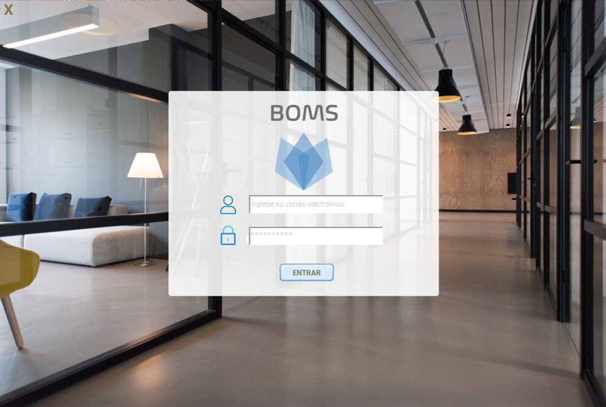
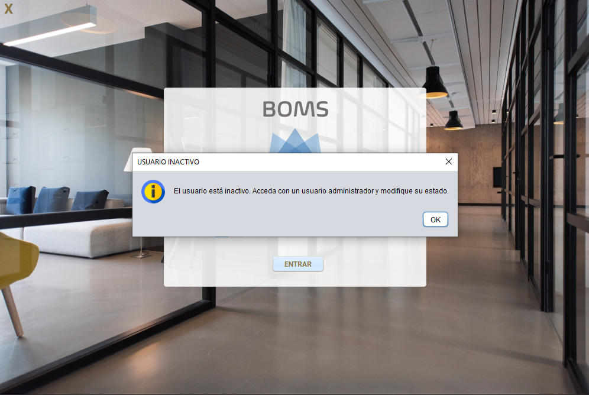

Una vez que hemos ejecutado la aplicación, se abre la ventana de inicio.

Introducimos nuestro usuario, que debe ser un correo electrónico, y la contraseña que nos haya dado el administrador del sistema para acceder. Si el usuario no está activo, nos saldrá el siguiente mensaje y deberemos entrar con un usuario administrador que cambie el estado del usuario a "ACTIVO".

Si el usuario está "ACTIVO" y las credenciales son correctas, se accederá a la aplicación sin problema.
Asimismo, si queremos salir de la pantalla de acceso podemos hacer clic en la X que se ve en la esquina superior izquierda.